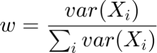
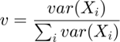
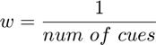
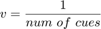
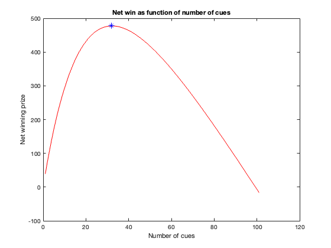

clear; close all; clc;
This problem is identical to the Q2 (b) with multiple cues and each cue having the same variance of 10. Using the same rationale, we can obtain the weight of each cue to be:

Similarly,

Since the variance of each cue is the same, we get:

Similarly,

These weights can then be used to compute the X and Y estimates of the center.
Following the procedure in 2a and 2b, the correct estimates can then be computed by checking if the radial estimate of each of these estimates from the center of the target circle is within radius of 1. The probability correct is then the ratio of the count of the correct estimates and the total number of trials.
trials = 1e6; % Number of trials to be run for the Monte Carlo simulation x_center = ones(trials, 1) .* randi(10); % The x-coordinate of the center of the target y_center = ones(trials, 1) .* randi(10); % The y-coordinate of the center of the target gauss_var = 10 .* ones(trials, 1); % variance of Gaussians for each cue target_radius = ones(trials, 1); % radius of the target cue_counts = 1:101; % number of cues used % Drawing samples from Gaussians X_cue = x_center + sqrt(gauss_var) .* randn(trials, length(cue_counts)); Y_cue = y_center + sqrt(gauss_var) .* randn(trials, length(cue_counts)); X = zeros(trials, length(cue_counts)); % Initializing x choices Y = zeros(trials, length(cue_counts)); % Initializing y choices for cc = cue_counts % Weights of cues w = ones(cc, 1)./cc; v = ones(cc, 1)./cc; % Final choices X(:, cc) = X_cue(:, 1:cc) * w; Y(:, cc) = Y_cue(:, 1:cc) * v; end radial_distance = sqrt((X - x_center).^2 + (Y - y_center).^2); % computing radial distance count_correct = sum(radial_distance <= target_radius); % checking for correct hits prob_correct = count_correct./trials; % probability of correct choices
Now the potential prize that the subject can win is $1000. The expected winning prize can hence be computed as the product of probability correct and the total winning prize. The cost of each cue is $10. Therefore, the total cost of cue is the product of total number of cues used and the cost of each cue. The net winning prize is then simply a difference between the total prize and the cue cost. The maximum winning prize can be obtained using the max function.
potential_prize = 1000; cue_cost = 10; prize = potential_prize .* prob_correct; cue_cost = cue_cost .* cue_counts; net_winning = prize - cue_cost; [max_winning, max_win_index] = max(net_winning); sprintf('In order to maximize the gain, the simulation suggests that Roozbeh should use approximately %d cues', max_win_index) figure() plot(cue_counts, net_winning, 'r-') hold on; plot(cue_counts(max_win_index), max_winning, 'b*') xlabel('Number of cues') ylabel('Net winning prize') title('Net win as function of number of cues')
ans =
'In order to maximize the gain, the simulation suggests that Roozbeh should use approximately 32 cues'
